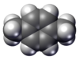

p-xylene

Definition: p-Xylene (para-xylene) is an aromatic hydrocarbon. It is one of the three isomers of dimethylbenzene known collectively as xylenes. The p- stands for para-, indicating that the two methyl groups in p-xylene occupy the diametrically opposite substituent positions 1 and 4. It is in the positions of the two methyl groups, their arene substitution pattern, that it differs from the other isomers, o-xylene and m-xylene. All have the same chemical formula C6H4(CH3)2. All xylene isomers are colorless and highly flammable. The odor threshold of p-xylene is 0.62 parts per million (ppm).
Source: Wikipedia
Wikipedia Page (Something wrong with this association? Let us know.)
Wikidata Page (Something wrong with this association? Let us know.)